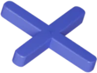
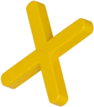

1
Descarga la app
Disponible en App Store, Google Play y AppGallery.
Consulta tu cupo, paga tus cuotas, compra seguro con tu clave dinámica y sube de nivel con Quac+.

¿Estás en tu computador?Escanea con la cámara de tu celular




Disponible en App Store, Google Play y AppGallery.
100% digital: solo necesitas tu cédula, tu celular y tu correo. Solicítalo aquí.
Usa tu clave dinámica en nuestros comercios aliados y empieza a pagar en 15 días.
Quac+ · Programa de beneficios
15.000 Quacs · 12.000 – 19.999 Quacs
1 Quac por cada $1.000 en compras3 Quacs por cada $1.000 pagado a tiempo
¿Estás en tu computador?Escanea con la cámara de tu celular